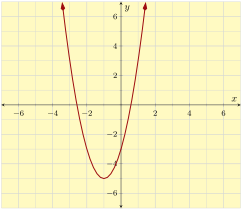
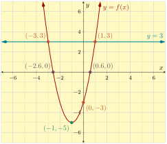

Example 1.8.2.
Use technology to graph and make a table of the quadratic function \(f\) defined by \(f(x)=2x^2+4x-3\) and find each of the key points or features.
-
Find the vertex.
-
Find the vertical intercept (i.e. \(y\)-intercept).
-
Find the horizontal or (i.e. \(x\)-intercept(s)).
-
Find \(f(-2)\text{.}\)
-
Solve \(f(x)=3\) using the graph.
-
Solve \(f(x)\le 3\) using the graph.
-
State the domain and range of the function.
Explanation.
The specifics of how to use any one particular technology tool vary. Whether you use an app, a physical calculator, or something else, a table and graph should look like:
| \(x\) | \(f(x)\) |
| \(-2\) | \(-3\) |
| \(-1\) | \(-5\) |
| \(0\) | \(-3\) |
| \(1\) | \(3\) |
| \(2\) | \(13\) |

Additional features of your technology tool can enhance the graph to help answer these questions. You may be able to make the graph appear like:

-
The vertex is \((-1,-5)\text{.}\)
-
The vertical intercept is \((0,-3)\text{.}\)
-
The horizontal intercepts are approximately \((-2.6,0)\) and \((0.6,0)\text{.}\)
-
When \(x=-2\text{,}\) \(y=-3\text{,}\) so \(f(-2)=-3\text{.}\)
-
The solutions to \(f(x)=3\) are the \(x\)-values where \(y=3\text{.}\) We graph the horizontal line \(y=3\) and find the \(x\)-values where the graphs intersect. The solution set is \(\{-3,1\}\text{.}\)
-
The solutions are all of the \(x\)-values where the function’s graph is below (or touching) the line \(y=3\text{.}\) The interval is \([-3,1]\text{.}\)
-
The domain is \((-\infty,\infty)\) and the range is \([-5,\infty)\text{.}\)